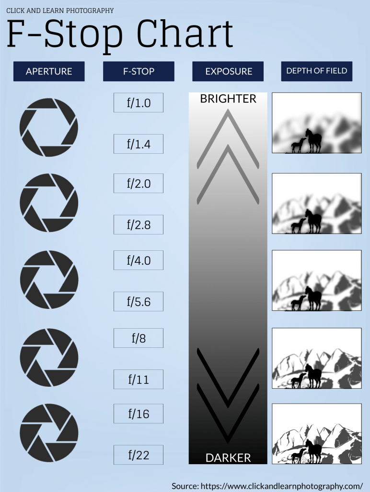

Aperture
Aperture is "the opening in a lens through which light passes to enter the camera. " (Photographylife.com) When taking a photograph, adjusting the aperture adjusts how much light enters through your lens and affects both the exposure and depth of field in your final image. Click here to learn more about aperture.

Image via Unsplash
F-Stops
To adjust the aperture on your DSLR camera, you change what's called the "f-stop." Although it may not seem intuitive, a smaller f-stop number equals a wider aperture, and a larger f-stop number equals a smaller aperture. See the chart below to understand the connection between aperture and f-stops, and the effect they have on your photographs.
Image courtesy of Click and Learn Photography
Is this photo taken a wide or narrow aperture?
Hint: Hover over the image below to find out!

Image courtesy of Christopher Campbell via Unsplash
Next page